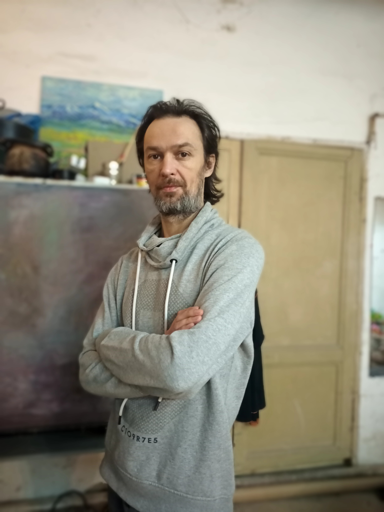
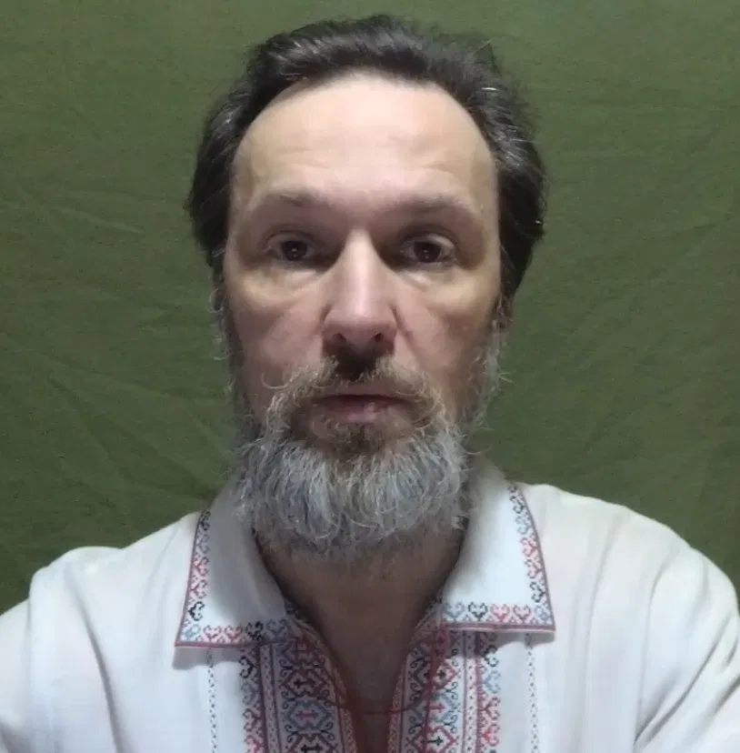

Художник і винахідник, що працює на перетині живопису та дослідження світла. Автор техніки світлочутливого RGB-живопису та теоретичної моделі SCI (Spectral Channel Integrity).
Artist and inventor working at the intersection of painting and light research. Creator of the light-sensitive RGB painting technique and the SCI (Spectral Channel Integrity) theoretical model.

Михайло Кашкаров (нар. 1976, Харків) — художник і винахідник, що працює на межі оптики, живопису та науки. Автор унікальної техніки світлочутливого RGB-живопису: в одному полотні нашаровано три незалежні візуальні структури, кожна з яких проявляється лише під впливом певного спектра світла — червоного, зеленого або синього. Це перетворює картину зі статичного об'єкта на динамічний, що змінюється разом зі світлом і залучає глядача до прямої взаємодії.
В основі техніки — авторська теоретична модель SCI (Spectral Channel Integrity), що описує принцип ізоляції та нормалізації трьох пігментних каналів; дослідження опубліковане в репозиторії Zenodo (2026).
Михайло також є автором і патентовласником кінетичної конструкції «Каскад». Роботи представлені в Національному художньому музеї України (Київ), Ландау-центрі та Художньо-меморіальному музеї ім. І. Рєпіна (Чугуїв).
Mykhailo Kashkarov (b. 1976, Kharkiv) is an artist and inventor working at the intersection of optics, painting and science. He is the creator of a unique light-sensitive RGB painting technique: a single canvas holds three independent visual layers, each revealed only under a specific spectrum of light — red, green or blue. This turns the painting from a static object into a dynamic one that changes together with the light and draws the viewer into direct interaction.
The technique is grounded in his own theoretical model, SCI (Spectral Channel Integrity), which describes the isolation and normalization of three pigment channels; the research is published in the Zenodo repository (2026).
Mykhailo is also the author and patent holder of the kinetic construction "Kaskad". His works are held at the National Art Museum of Ukraine (Kyiv), the Landau Center, and the Repin Art-Memorial Museum (Chuhuiv).
Модель SCI (Spectral Channel Integrity) вирішує проблему збереження кольорового сигналу на різних фізичних носіях. Її ключова задача — усунення міжканальних завад (crosstalk) у субтрактивному друці за допомогою детермінованої нормалізації каналів RGB, що зберігає пропорції компонентів кольору після друку.
Модель дозволяє перетворювати фізичні поверхні — зокрема полотна, написані олійними фарбами чи акрилом — на стабільні носії даних, придатні для комп'ютерного зору, калібрування оптичних систем і багатоканального спектрального кодування, зокрема у форматі кольорових QR-кодів.
The SCI (Spectral Channel Integrity) model addresses color-signal preservation across different physical media. Its core task is eliminating inter-channel crosstalk in subtractive printing through deterministic RGB channel normalization, keeping color-component proportions stable after printing.
The model turns physical surfaces — including oil or acrylic paintings on canvas — into stable data carriers suitable for computer vision, optical system calibration, and multi-channel spectral encoding, including color QR-code formats.
Натисніть на кольорову кнопку, щоб побачити, як змінюється зображення залежно від спектра освітлення.
Click a color button to see how the image transforms under different light spectra.
Постійні експозиції: Ландау-центр (Харків), Художній музей імені І. Рєпіна (Чугуїв)
Permanent exhibitions: Landau Center (Kharkiv), Repin Art Museum (Chuhuiv)
Відкритий до співпраці, виставок і колаборацій.
Open to collaborations, exhibitions and inquiries.